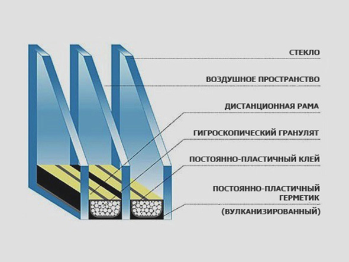
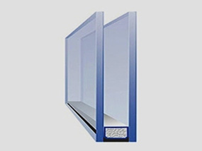
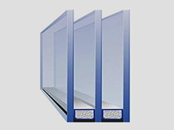
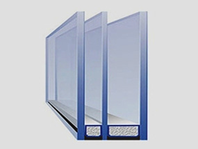
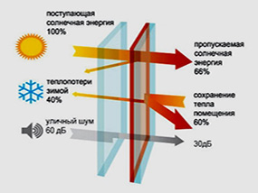
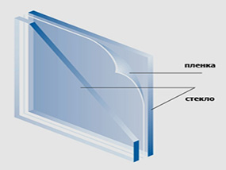
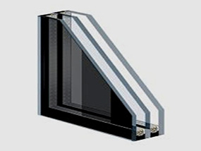
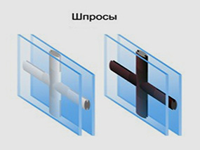

Вызов
замерщика
Стеклопакеты

Многие потребители считают, что стеклопакеты и пластиковые окна - синонимы, хотя это не так. Стеклопакет – это только часть окна, важный элемент, благодаря которому можно осмотреть улицу. Обычно он заключается в раму, которую собирают из пластикового профиля и крепят в оконном проеме. Поэтому будет правильнее использовать фразу «окна со стеклопакетами», ведь все мы знаем, что стеклопакеты являются не пластиковыми, а стеклянными.
В действительности же, окна ПВХ со стеклопакетами обычно состоят из 2 или 3 стекол, а между ними есть воздушная камера шириной десять миллиметров или чуть больше. Величина этой воздушной камеры может зависеть от ширины прямоугольного сечения самого профиля, называемого также «дистанционной рамкой». Такая рамка заполнена специальным веществом, впитывающим влагу, благодаря чему стекла не запотевают изнутри. Однокамерные стеклопакеты — с 2-мя стеклами, а двухкамерные соответственно — с 3-мя.
- Однокамерный
Состоит из двух стекол, его толщина равна 24 мм, причем толщина каждого стекла составляет 4 мм, а размеры дистанционной рамки достигают 16 мм. Установка стеклопакета с одной камерой применяется обычно в офисных помещениях или квартирах для балконных блоков (окно и балконная дверь), где уже была застеклена лоджия или балкон. Он подойдет там, где не нужны высокие требования по теплопроводности и шумоизоляции.
- Двухкамерный
Состоит из трех стекол, его толщина равна 32 мм, причем толщина каждого стекла составляет 4 мм, а размеры дистанционной рамки достигают 16 мм. Установка стеклопакета с двумя камерами применяется обычно для окон и балконных блоков (окно и балконная дверь) расположенных в жилых многоквартирных домах или коттеджах. Он подойдет там, где необходимы повышенные требования по теплопроводности и шумоизоляции.
- Шумоизолирующий
Используется для устранения посторонних звуков. Окна, которые выходят на улицу с движением транспорта, требуют повышенной шумоизоляции. Звукоизолирующие стеклопакеты должны состоять из разной толщины стекол (4 и 6 мм) и разного размера дистанционной рамки. А также и однокамерные стеклопакеты могут быть с защитной пленкой что улучшает звукоизоляцию на 4 дБ, это равно свойствам 2-х камерных стеклопакетов 32 мм.
- Энергосберегающий
Кроме обычного стекла также включает в себя " i-стекло ", которое может действовать по методу теплового зеркала. Его теплоотражающее покрытие нанесено с помощью вакуумного напыления серебряных ионов. Теплосберегающие стеклопакеты эффективно снижают теплопотери, а также обладают хорошей светопропускной способностью. Энергосберегающие стеклопакеты применяются в любых помещениях.
- Защитный
Противоударный — представляет собой стекло, на которое нанесена защитная пленка, как правило в 100 мкр. Эти стеклопакеты являются еще и безопасными. Если стекло разобьется, то пленка не позволит разлететься осколкам, тем самым оберегая от травм. Такой вариант наиболее предпочтительнее для витрин магазинов, либо для домов, которые находятся вблизи от футбольных площадок и т.п.
- Тонированный
Используется в помещении с солнечной стороны, где есть много солнечного света. Также он может быть применен в декоративных целях. В его основу входит тонированное стекло, обладающее свойствами светонепроницаемости.
- Декоративный стеклопакет
Подойдет помещениям, где есть необходимость выделить уникальность интерьера, а также реализовать идеи дизайнера. Такие стеклопакеты представлены тремя видами по раскладке (шпросов): с прямоугольным сечением 26 мм, с прямоугольным сечением 18 мм, а также округлой формы 8 мм (кроме белых предлагаются золотистые и коричневые).
- Защитный
Противоударный — представляет собой стекло, на которое нанесена защитная пленка, как правило в 100 мкр. Эти стеклопакеты являются еще и безопасными. Если стекло разобьется, то пленка не позволит разлететься осколкам, тем самым оберегая от травм. Такой вариант наиболее предпочтительнее для витрин магазинов, либо для домов, которые находятся вблизи от футбольных площадок и т.п.